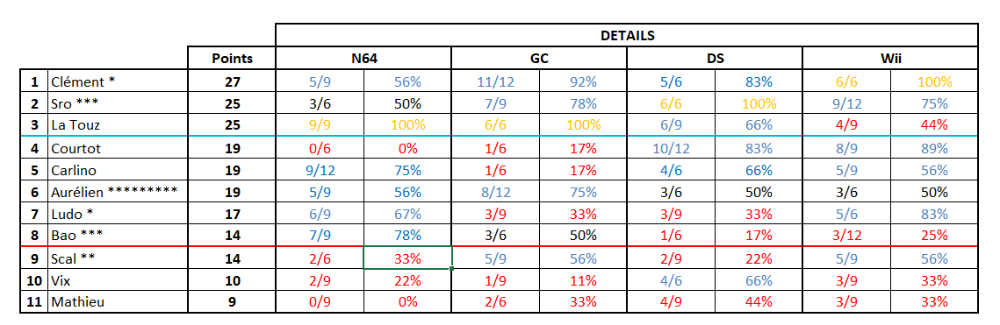

Résultat de l'édition 2025

Voici les résultats (tant attendus !) du traditionnel tournoi Mario Kart organisé cette fois encore
chez l’ami Sro. Nous avons d’ailleurs renoué avec nos anciennes habitudes puisque nous avons été
assez nombreux pour faire un foot le matin (8 + 2 enfants du coin^^), signe des progrès constants de
la médecine. Puis la soirée a donné lieu à une compétition sur les activités multi-jeux (fléchette,
billard japonais, pétanque-oranges et mini-ping-pong) inaugurées l’an dernier. Cette compétition
annexe a vu la victoire de Ludo qui a réalisé un quasi-sans-faute.
Mais revenons au tournoi Mario Kart : au programme, 11 participants répartis sur 4 consoles (N64,
Gamecube, DS, Wii) avec des contraintes assurant que chacun joue à peu près le même nombre de fois
sur chaque console et contre chaque adversaire au cours de l’après-midi.
Et la victoire revient à Clément qui a réalisé un parcours remarquable sur toutes les consoles. Il
s’est quand même infligé une ultime frayeur sur les deux dernières journées alors qu’il voyait le
redoutable polonais grignoter son retard et être à deux doigts de le pousser aux prolongations sur
les routes arc-en-ciel. Mais il a tenu bon et s’est donc offert une deuxième couronne 19 ans ( !!)
après son premier sacre. Inutile de préciser que c’est le plus grand écart d’années entre deux
titres (consécutifs ou non).
Son dauphin n’est autre que l’ami Sro qui confirme son regain de forme en décrochant un 3ème podium
lors des 4 dernières éditions. Ses performances moyennes sur N64 lui auront coûté la victoire. Cela
reste une très belle seconde place pour le Poulidor polonais qui détient le record en la matière
avec 8 médailles d’argent en 20 participations.
Le podium est complété par un autre habitué des honneurs à savoir La Touz. Après un départ diesel,
il a réalisé un quasi-sans-faute dans la dernière ligne droite pour finir à égalité de points avec
Sro (avec notamment 100% des points sur N64 et Gamecube). Les confrontations directes étant faveur
de ce dernier, cela ne sera pas l’année du premier titre pour La Touz qui reste le joueur avec le
plus de participations (15) à n’avoir aucune étoile sur son maillot (l’inverse de son club de foot
de cœur ❤).
Vient ensuite une belle brochette de 3 joueurs à égalité à 19 points et départagés aux
confrontations directes et nombre de premières places.
Au pied du podium donc, nous retrouvons Courtot qui égale ses meilleures performances de 2023 et
2012. Comme à son habitude, il a été brillant sur DS et Wii (18 pts gagnés) et très moyen, pour ne
pas dire autre chose, sur N64 et GC (1 pt de gagné).
A la cinquième position, Carlino a un profil un peu similaire avec une affection prononcée pour la
N64, sur laquelle il a pu jouer 4 fois et récolter 9 pts. Mais cette année il a réussi à aller
chercher des points ailleurs, en particulier sur DS et Wii pour accrocher son meilleur résultat en
carrière !
A la sixième place, c’est moi, qui réussit à relever la tête après la performance calamiteuse de
2024. Des résultats corrects dans l’ensemble malgré des fautes bêtes sur les deux dernières journées
qui me coûtent des points importants. Mais je pense qu’en continuant avec des performances comme
celle-là, la routourne va vite tourner comme disait le philosophe boulonnais.
A la septième place, c’est Ludo qui domine la seconde partie de tableau. Malgré des bons résultats
sur N64 (habituel) et sur Wii (beaucoup moins habituel), il a été plombé par ses résultats sur DS et
GC. Certains attendaient plus de cet ancien vainqueur qui n’a plus été sur le podium depuis 2019.
Bao suit à la huitième position. Quelle désillusion pour le triple vainqueur de la compétition qui
obtient là son plus mauvais rang. Ses performances sur N64 ont été bonnes mais que dire de celles
sur DS, Wii et même Gamecube, console sur laquelle il fût jadis si dominateur.
Arrivé à ce stade, le lecteur doit être en train de s’interroger : « tiens, Scal n’a pas dû
participer cette année, impossible que le tenant du titre soit tombé si bas ». Et bien que nenni, il
était bel et bien là et a échoué à une piteuse 9ème place… Jamais on n’avait vu un tenant du titre
si mal placé, de surcroît l’année succédant à son sacre. D’ailleurs vous remarquerez sur la photo,
que même les projecteurs l’ont fui pour le laisser dans l’ombre… A lui de tout faire pour revenir
dans la lumière dès l’année prochaine !
Dixième et avant-dernier, notre Vix national qui récupère sa place de 2023, l’année où il avait
renoué avec la compétition après 15 ans de trêve. La DS semble être une console qui lui convient
puisqu’il est positif dessus en ayant même remporté une journée dessus.
Pour clore ce classement, puisqu’il faut qu’il y en ait un, c’est Mathieu Lehmann un nouveau venu.
Faisant partie de la famille de Scal, ce dernier lui avait parlé de l’événement lors d’un repas
pendant les fêtes de fin d’année (et vantant sans doute ses mérites personnels par la même
occasion). Intrigué, il est venu la fleur au fusil (ou plutôt au kart) et a appris à ses dépens
qu’on ne s’improvise pas joueur de Mario Kart du jour au lendemain, notamment sur les consoles les
plus anciennes. Mais il a pris ses marques au fur et à mesure de la journée, en en remportant
notamment une sur la fin, En espérant que ce baptême du feu ne l’a pas dégoûté, et qu’il sera
partant pour confirmer, les prochaines années, les promesses aperçues lors des dernières courses.
En parallèle, plusieurs nouveautés ont été introduites dans cette édition.
A commencer par des peluches récompenses à conserver par respectivement le gagnant et le perdant
jusqu’à l’année prochaine pour les remettre en jeu. De plus, tous les gagnants historiques ont reçu
un porte-clé Mario Kart collector (David Janssen, il y en a un qui t’attend) et à partir de cette
édition chaque nouveau gagnant en obtiendra un (Clément est donc le seul à en avoir 2 !!). Autre
nouveauté, un concours de paris en amont de la compétition dont les côtes sont basées sur les
résultats deux dernières éditions. Et si certaines côtes semblaient réalistes et acceptés de tous
(notamment la victoire de Clément à 2.04), d’autres ont fait plus jaser (la côte podium de Ludo à 29
ou celle de Vix à +infini pour la victoire finale 😃). Et c’est Heddy Arab qui remporte cette
compétition (à défaut d’avoir participé au tournoi en lui-même) en ayant misé sur le bon cheval, en
l’occurrence Sro sur le podium (côte à 5.73).
Bref, merci à tous pour cette journée bien remplie et rendez-vous l’année prochaine 😊